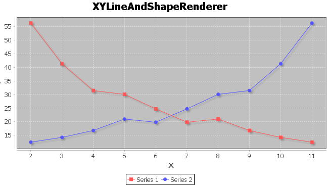
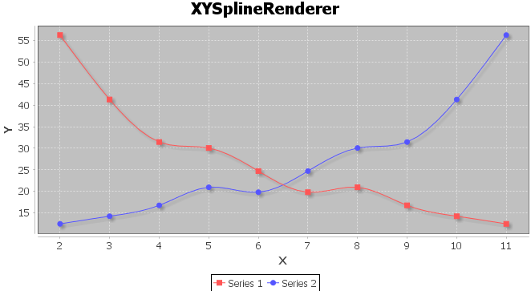

Make a curve for financial instruments valuation. e.x. Yield Curve, Discount Factor.
CurveMaker，简而言之，就是实现曲线的构建。在金融领域，会大量的应用到这种较为理性的图形，并且利用其隐含的数字实现复杂的业务逻辑，例如金融产品定价、风险计量等等。
金融工程中，我们大量的使用曲线——不管是利率曲线、折现曲线还是波动率曲线。当我们去仔细研究一个曲线构成时，会发现曲线是有两个轴构成的，横轴一般是用来表示时间，纵轴用来表示收益率、折现率、波动率等等。既然如此，在连续的时间上，我们可能有连续的若干种结果，但是在实务上，又很难来表示一个连续的结果——往往我们只能得到若干个关键点上的纵轴上的要素。在这种情况下，我们就需要用数学的方法去把关键的要素扩展为一个连续的结果。再把这种结果应用到复杂的金融场景中去，这也是这个项目深层次的意义。
金融数学领域，把构建曲线的方法叫做插值法，而插值法又根据金融市场的特征，分为线性插值、赫拉米特插值等等。CurveMaker就是要把输入的关键点,使用插值法扩展为一条曲线，并通过Jfreechart插件展示为一条曲线，还需要根据使用者所需，返回对应X轴上的取值。某些更复杂的场景下，还会根据一个二维的条件得到一个三维结构上的取值。
线性和非线性的关系，从视觉（感性）上来讲，平滑和不平滑的感觉——就像生活中带刺的人和圆滑的人的区别。当然在数学领域（理性）上来说，线性就是在坐标系的两个点上取直线，在直线上取任意一点都可以得到他的具体坐标，因为可以根据二项式直接计算；非线性则有两个约束条件，第一，坐标系里的两个点一定存在某种关系（相连），第二，那在这种联系上找到的第三个点，他的切线与第三个点最近的点的切线尽可能的重合。而线性和非线性的曲线，在金融领域，只是应用的关系，因此只要区分清楚曲线的特性和它所隐含的数字的特性，就可以很好的利用起来。存在某些不专业的表述，还望各位大神见谅，我会不断学习，不断修正。
Liner & Nonliner
在理解线性和非线性关系，找到数学关联时，我参阅了以下资料： Interpolation with Bezier Curves 万能公式——朗格朗日插值 感谢上文中的若干作者！
没想好，待定！！！
If you prefer to not use the automatic generator, push a branch named gh-pages to your repository to create a page manually. In addition to supporting regular HTML content, GitHub Pages support Jekyll, a simple, blog aware static site generator written by our own Tom Preston-Werner. Jekyll makes it easy to create site-wide headers and footers without having to copy them across every page. It also offers intelligent blog support and other advanced templating features.
$ cd your_repo_root/repo_name
$ git fetch origin
$ git checkout gh-pages
You can @mention a GitHub username to generate a link to their profile. The resulting <a> element will link to the contributor's GitHub Profile. For example: In 2007, Chris Wanstrath (@defunkt), PJ Hyett (@pjhyett), and Tom Preston-Werner (@mojombo) founded GitHub.
Having trouble with Pages? Check out the documentation at https://help.github.com/pages or contact support@github.com and we’ll help you sort it out.